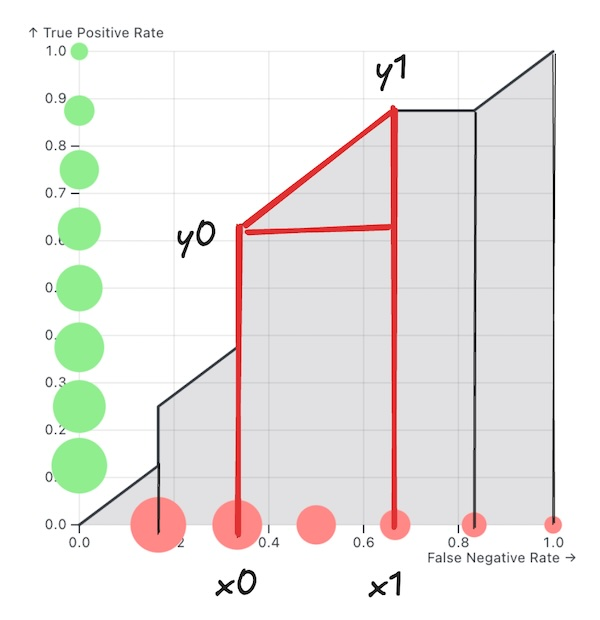

Implementation of ROC AUC Score
Introduction
This post is a continuation of the ROC and AUC Interpretation. Please make sure that you understand that post before reading this one.
In this post, we will implement a ROC AUC Score in Python with \(O(n\log n)\) runtime complexity.
Subscribe to get a notification about future posts.
Explanation
Similar to the previous post we have:
- A dataset with positive and negative items
- An ML model that predicts a probability score from 0 to 1, representing the probability that the input belongs to the positive class
We want to compute the ROC AUC score of our model predictions. The algorithm that we are going to implement is explained more easily with a visualization (press the play button):
This is a slightly modified visualization from the other post. A few notes from the animation video:
- The ROC score is the sum of the areas of trapezoids formed by two adjacent points on the ROC curve
- Some trapezoids have zero area
- We process the dataset items in order of their probability scores, from the highest to the lowest
Implementation
Let’s setup our environment:
import numpy as np
np.random.seed(0)
n = 100
target = np.random.randint(0, 2, n)
predicted = np.random.rand(n)We randomly generated targets and predicted probability scores. Let’s check the result of sklearn.metrics.roc_auc_score:
import sklearn
sklearn.metrics.roc_auc_score(target, predicted)np.float64(0.4277597402597403)Our implementation should have the same score.
Trapezoid Area
First, let’s implement a helper function that finds the area of the trapezoid defined by two points \((x_0, y_0)\) and \((x_1, y_1)\).

To achieve this, we can add the area of the rectangle and the area of the right triangle, which is:
\[ \begin{align} \text{Area}&=(x_1-x_0) \times y0+\frac{1}{2}(x_1-x_0) \times (y_1-y_0)\\ &= \frac{1}{2}(x_1-x_0) \times (2y_0+y_1 - y_0)\\ &= \frac{1}{2}(x_1-x_0) \times (y_0 + y_1)\\ \end{align} \]
Let’s implement the formula in Python:
def trapezoid_area(p0, p1):
return (p1[0] - p0[0]) * (p0[1] + p1[1]) / 2.0ROC AUC Score
Now our main implementation:
def roc_auc_score(target, predicted):
n = target.shape[0]
num_positive = np.sum(target == 1)
num_negative = n - num_positive
# argsort in reverse order
1 order = np.argsort(predicted)[::-1]
last = [0, 0]
num_true_positive = 0
num_false_positive = 0
score = 0
2 for index in range(n):
# Make sure that the new threshold is unique
if index == 0 or predicted[order[index]] != predicted[order[index - 1]]:
# True positive rate
tpr = num_true_positive / num_positive
# False positive rate
fpr = num_false_positive / num_negative
# New point on the ROC curve
3 cur = [fpr, tpr]
4 score += trapezoid_area(last, cur)
last = cur
if target[order[index]] == 1:
5 num_true_positive += 1
else:
6 num_false_positive += 1
score += trapezoid_area(last, [1, 1])
return score - 1
- Sort items by their predicted scores, from largest to smallest
- 2
- Process the sorted items one by one in a loop:
- 3
- Form the current point on the ROC curve by: \((\frac{\text{num\_false\_positive}}{\text{num\_negative}}, \frac{\text{num\_true\_positive}}{\text{num\_positive}})\)
- 4
- Add the trapezoid area formed by the previous point and the current one
- 5
-
If the current item is positive, then increase
num_true_positiveby one - 6
-
If the current item is negative, then increase
num_false_positiveby one
Let’s verify the result:
roc_auc_score(target, predicted)np.float64(0.4277597402597403)Nice, we got exactly the same result as sklearn.
The End
I hope you enjoyed this post.
Subscribe to get a notification about future posts.